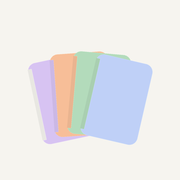

TakeNotesPrivacy Policy
Your notes stay on your iPad. TakeNotes has no accounts, no servers of its own, and in this version no ads, analytics or tracking. The only thing that ever leaves the app is feedback you choose to send.
What stays on your iPad
Everything you create in TakeNotes is stored only in the app’s storage on your iPad:
- notebooks, pages and your handwriting;
- pictures, shapes and parts you cut from PDFs;
- PDFs you import as lecture materials;
- questions you mark and their review history;
- your class timetable, exam dates and settings (including the name and subject you may enter during setup).
We don’t receive any of it, and it isn’t sent anywhere. If you delete the app, iPadOS deletes this data too. Syncing between your devices through your own iCloud may come in a later update; this page will be updated before it does.
Backups you make
Settings → Back up everything creates a file on your iPad. You decide where it goes — Files, iCloud Drive, AirDrop or anywhere else the share sheet offers. We never receive it; it is handled by the place you save or send it to.
Photos, camera and files
When you add a picture or a PDF, iPadOS lets you pick it or take a photo. TakeNotes only gets the items you choose, keeps them on your iPad, and never uploads them.
Reminders
The daily review reminder is a local notification scheduled on your iPad. It doesn’t use a push server, and nothing about it leaves the device.
Feedback you choose to send
In Settings you can send feedback or answer a short survey about future features. This happens only when you tap Send.
- What is sent
- Your answers and the text you type, plus the app’s version number.
- What is not sent
- Your notes, pages, questions, PDFs, pictures, your email address, or any device or advertising identifier.
- How it travels
- Over an encrypted connection (HTTPS) to FormSubmit, a form-to-email service that forwards it to the developer’s inbox. FormSubmit handles it under its own privacy policy.
- Where it is kept
- In the developer’s email, only to understand and improve TakeNotes. It is never sold or shared.
Please don’t include personal details in your feedback. If you’d like something you sent to be deleted, email us and we’ll remove it.
Ads, analytics and tracking
This version of TakeNotes shows no ads, contains no analytics or advertising SDKs, and doesn’t track you across apps or websites. If a future version adds anything of the kind, we’ll update this policy and the App Store privacy information before that version is released.
Children
TakeNotes doesn’t collect personal information from anyone, including children.
Changes
When this policy changes, we’ll update this page and its effective date.
Contact
Questions about this policy: kbl.jobs777@gmail.com. Your notes never reach us, so there is nothing of yours to delete except feedback you sent — write to us if you’d like that removed. Deleting the app deletes everything it stored on your iPad.